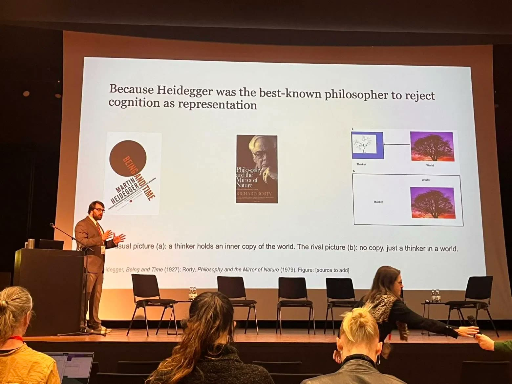

Collin Lucken
Hastings Postdoctoral Scholar in AI & Humanity
Bowdoin College
I am a philosopher studying complex cognitive systems and artificial intelligence engineering through the lens of maker’s knowledge. As Hastings Postdoctoral Scholar in AI and Humanity at Bowdoin College, I also help students and faculty decide how, and whether, to bring AI into their own teaching and research.
News
- 2026 Bowdoin News profiled my course Minds and Machines (PHIL 2400) in “Asking Questions; Questioning Answers.”
-
2026
Presented “When Does the Body Matter? A
Dynamical Signature of Coupling Dependence in
Evolved Neural Controllers” at SAB 2026 in
Berlin.

- 2026 Paper accepted at Studies in History and Philosophy of Science: “The Erotetic Logic of William Whewell's Fundamental Antithesis.”
- 2026 Launched Colligate, a concept-mapping workspace for philosophy teaching.
- 2026 Paper accepted at Teaching Philosophy: “Mindshaping and Learner-Centered Pedagogy: A Revealing Harmony,” with W. John Koolage.
- 2026 Paper accepted at Science and Engineering Ethics: “An Identity-Based Ethics for Engineering.”
- 2026 Built an AI web dashboard for local nonprofits with Fernando Nascimento, demonstrated at a workshop run by the Hastings Initiative for AI and Humanity and the McKeen Center for the Common Good.
- 2026 Paper accepted at From Animals to Animats: The 18th International Conference on the Simulation of Adaptive Behavior (Berlin, October): “When Does the Body Matter? A Dynamical Signature of Coupling Dependence in Evolved Neural Controllers.”
- 2026 Blog post published on EJIL: Talk!, with Ezgi Yildiz and Umut Yüksel: “The Chișinău Declaration in the Data: Non-Refoulement and States’ Insatiable Appetite for a Restrained Court.”
- 2025 Recruited a team of undergraduate student ambassadors as part of the Hastings Initiative for AI and Humanity.
- 2025 Joined Bowdoin College as Hastings Postdoctoral Scholar in AI and Humanity.
- 2025 Article published in Studies in History and Philosophy of Science: “Leveraging participatory sense-making and public engagement with science for AI democratization.”
- 2025 PhD dissertation completed: Engineering Progress in Science, University of Cincinnati.
- 2024 M.Eng. in Robotics and Intelligent Autonomous Systems completed.